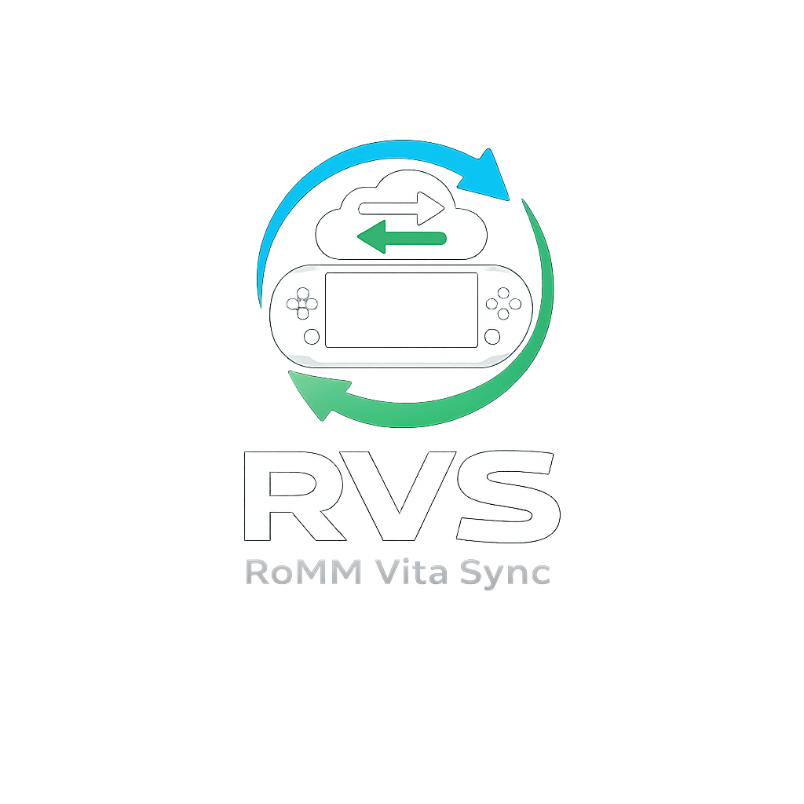
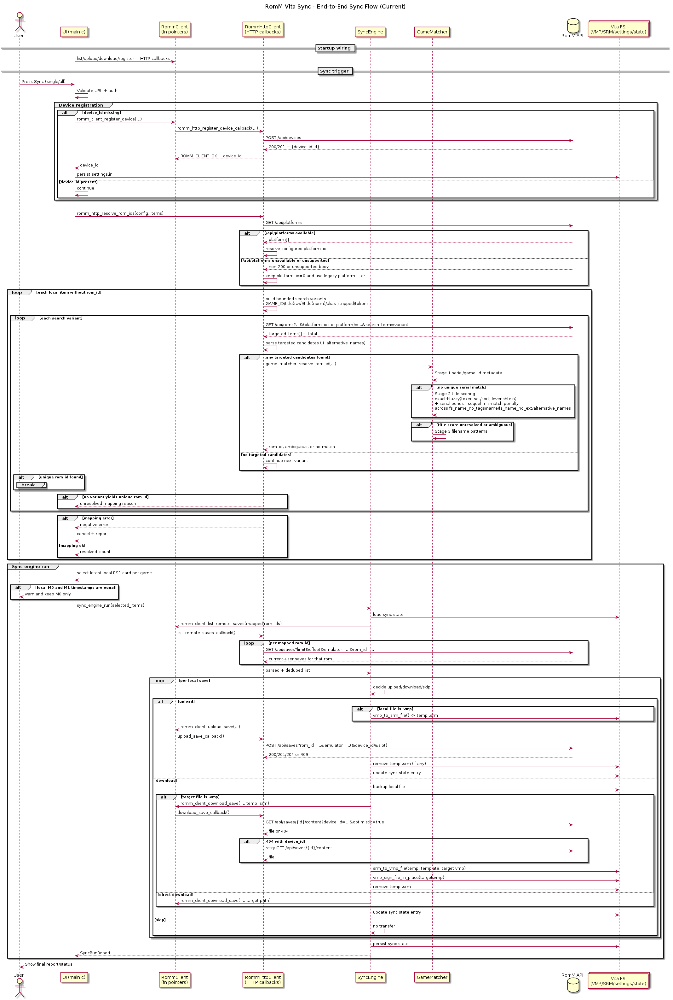

romm-vita-sync

Save synchronization client for RomM on PlayStation Vita, supporting native and emulated platforms.
Overview
romm-vita-sync is a PlayStation Vita homebrew application designed to synchronize game save data with a RomM server.
The long-term objective is cross-platform save synchronization across:
- PS Vita native games
- PSP (Adrenaline)
- PS1 (POPS via Adrenaline)
- RetroArch and other emulator environments
The first milestone targets PS1 save synchronization using Adrenaline virtual memory cards.
The first implementation targets a manual synchronization workflow executed from a dedicated homebrew application.
An optional startup auto-sync path is also available in-app ([Sync].auto_sync_on_startup = true) and uses persistent on-screen progress feedback.
Automatic trigger integration from system plugin events remains planned for a later stage.
Project Status
Stage: early development
This project is in early development. Back up your save data before installation or any manipulation.
Documentation scope:
- unless a section is explicitly labeled
Planned,Roadmap,Future Work, orDesign Notes, it describes the current codebase - ideas and possible future refactors are kept separate from implemented behavior on purpose
- when documentation and code disagree, the code is the reference for current behavior until both are brought back in sync
Published documentation is versioned with mike:
stableis built frommasterand is the default documentation channelnightlyis built fromdevelopand may describe unreleased changes
The GitHub Pages source is expected to be the gh-pages branch root.
Initial milestone includes:
- Detect PS1 save folders under
ux0:/pspemu/PSP/SAVEDATA - Parse
PARAM.SFO - Detect
SCEVMC0.VMPandSCEVMC1.VMP - Display metadata (path, size, timestamp)
- Convert
.VMP→.SRM - Convert
.SRM→.VMP - Compare local vs remote saves
- Select only the newest local PS1 card per game before sync; exact timestamp ties default to
SCEVMC0.VMPwith a warning - Manual synchronization workflow
- Synchronization is triggered manually from the application UI in this phase, with optional startup auto-sync (
auto_sync_on_startup) - Automatic backup before overwrite
- Zero destructive operations without confirmation
Current integration status:
- real HTTP device registration is implemented (
POST /api/devices) - upload/download conversion logic is integrated in
SyncEngine - real HTTP save transfer callbacks are wired (
list/upload/download) - local Vita saves are mapped to RomM
rom_idby trying/api/platformsfirst, then querying/api/romswith bounded search variants (GAME_ID, title exact, title compact, title normalized, alias-stripped title, significant tokens) and local scoring (serial, title fuzzy, filename fallback) - PS Vita native save sync uses raw PFS
.tararchives: eligible containers are exported with an embedded import README, uploaded to RomM through thevita3ksave backend, compared against existing remote archive saves, and restored back intoux0:user/00/savedatathrough a backup-first validated restore path; these archives are still not direct Vita3K imports
Execution Model (Version 1)
romm-vita-sync is implemented first as a standalone PS Vita homebrew application.
Synchronization is explicitly triggered by the user from within the application UI.
This approach ensures:
- safe validation of save conversion logic
- deterministic synchronization behavior
- easier debugging during early development
- reduced risk of unintended save overwrites
Automatic synchronization based on system events (for example after exiting a game) will be introduced later through a taiHEN plugin once the synchronization engine is fully validated.
Installation & Quick Start
This section summarizes the practical setup for both end users and developers.
End User Prerequisites
- PlayStation Vita with homebrew support
- VitaShell (or equivalent method to install VPK files)
- Adrenaline installed (for PS1 save support)
- Network access from Vita to your RomM server
- Valid RomM auth (
romm_api_tokenpreferred, or username/password)
Developer Build Prerequisites (Recommended: Docker)
- Docker Engine / Docker Desktop installed
- Docker daemon running
- Git with submodules support
Host Toolchain Prerequisites (Alternative)
- VitaSDK toolchain
- CMake
- Git with submodules support
curl(orcurl.exeon Windows)
Upload Target Configuration (Vita FTP)
The build/upload helpers read optional FTP settings from:
tools/build-and-upload-vpk.local.env
Create it from the sample template:
- Linux/macOS:
cp tools/build-and-upload-vpk.config.sample.env tools/build-and-upload-vpk.local.env - Windows PowerShell:
Copy-Item tools/build-and-upload-vpk.config.sample.env tools/build-and-upload-vpk.local.env
Supported keys:
FTP_HOST: Vita IP address (for example192.168.1.20)FTP_PORT: VitaShell FTP port (default1337)FTP_REMOTE_DIR: remote destination directory (defaultux0:/homebrews)
CLI arguments still override values from the local env file.
Recommended Build + Upload (Docker One-Command)
git submodule update --init --recursive- Linux/macOS:
./tools/docker-build-and-upload-vpk.sh - Windows PowerShell:
./tools/docker-build-and-upload-vpk.ps1
The FTP upload step uses an explicit timeout policy:
- connection timeout:
10s - upload stall timeout:
10s(if speed drops below1 B/s) - container lifecycle:
--rm(container auto-stopped and removed when script exits)
Host Toolchain Alternative
Use this method if you prefer a native VitaSDK setup on the host machine.
Commands:
git submodule update --init --recursive- Linux/macOS:
./tools/build-and-upload-vpk.sh - Windows PowerShell:
./tools/build-and-upload-vpk.ps1
First Launch
- Launch the app on Vita
- The app automatically creates
ux0:data/romm-vita-sync/ - Open
Settings, then enter the RomMurland preferredAPI token(or use username/password fallback) - Optionally toggle
Dry-run modeinSettingsbefore the first sync - Confirm each field saves immediately after closing the system keyboard
First Sync
- Ensure Vita can reach the RomM URL
- In the game list, check one or more detected games for the selected save platform
- Return to
Sync Selectedand press the system confirm button (XorO) - Follow progress in the sync modal for manual runs; automatic startup sync updates the header state and
Synchronizepanel status without opening a modal
Notes:
- The RomM URL, API token, username, and password are currently stored in plain text (no encryption) in
settings.ini. - Default
dry_run = true; you can disable it fromSettingsor set[Sync].dry_run = falseinsettings.inito execute real transfers. - Conflict auto-apply is always enabled internally so recommended conflict actions run automatically.
Configuration (settings.ini)
Connection and sync runtime options are read from:
ux0:data/romm-vita-sync/settings.ini
Format is INI-style (conventional in C/C++ desktop and embedded projects).
The app now creates ux0:data/romm-vita-sync/ automatically on startup.
You can configure the URL, preferred API token, username/password fallback, and dry-run mode directly in the in-app UI; manual file creation is not required.
Reference template (optional, for manual editing/debug):
samples/settings.ini.example
Supported sections:
[RomM]:url,romm_api_token,username,password,platform,emulator,verify_tls,timeout_seconds[Device]:device_id,device_name,device_platform,client,client_version[Sync]:state_store_path,backup_directory,dry_run,auto_sync_on_startup[Log]:level(error|warn|info|debug),file_enabled(true|false),scan_verbose(true|false)
Sync State Store (sync_state.tsv)
Default path:
ux0:data/romm-vita-sync/sync_state.tsv
Purpose:
- persist local synchronization metadata between runs
- remember the last known state for one save key (
game_id+filename+slot) - help the sync engine skip redundant uploads when local size and timestamp are unchanged and no remote match is found
- track the recorded origin device and the last upload timestamp associated with that save entry
What it stores:
- one format/version header
- the current
device_idwhen available - one tab-separated entry per tracked save with
game_id,filename,slot,size_bytes,timestamp_unix,origin_device, andlast_upload_unix
Operational notes:
- if the file is missing, the app treats it as an empty sync state rather than an error
- deleting
sync_state.tsvdoes not delete any save data; it only resets the local sync history - after deletion, the next synchronization behaves like a first pass and may re-evaluate or repeat transfers that would otherwise have been skipped
- this file is metadata only; it is not a backup and it does not contain the actual save payload
Security notice:
- The RomM URL, API token, username, and password are currently stored locally in
settings.iniwithout encryption (plain text). - This is intentional for the current milestone and will be hardened in a later iteration.
Authentication rule:
romm_api_tokenis used first when present and non-empty (Authorization: Bearer <token>)- when
romm_api_tokenis empty, username/password are used as HTTP Basic auth - if neither method is configured, authenticated RomM operations fail with auth/config errors
- if
[Device].device_idis empty, startup calls theRommClientregistration flow and persists the returneddevice_idintosettings.ini - recommended logging for troubleshooting:
level=debugand keepscan_verbose=falsefirst; enablescan_verbose=trueonly when debugging scanner issues - at
level=info, RomM HTTP logs summarize request/response flow for/api/platforms,/api/roms,/api/saves, and/api/devices - at
level=debug, Rom ID mapping logs include generated search variants, per-candidate title scores (exact/fuzzy/token/sequel penalty components), and explicit winner/ambiguous/reject reasons - HTTP error responses now log richer diagnostics automatically: effective URL/scheme, selected response headers (
Content-Type,Server,Via,Location,CF-Raywhen present), and a longer body preview - at
level=debug, additional raw response-body details remain available for troubleshooting unsupported API payloads - file logging remains available only through
settings.ini; the home screen no longer exposes a dedicated file logging row - when enabled manually, file logging path is fixed to
ux0:data/romm-vita-sync/romm-vita-sync.logwith 3 rotated files max (.log,.log.1,.log.2), 10MB each
Current in-app UI behavior:
- The home screen focuses on searching detected games, checking games, and launching synchronization.
- The
Settingsscreen exposes dedicated fields for the RomMurl, preferred API token, and username/password fallback. - The
Settingsscreen uses a single full-width grouped list for connection fields and sync options, including aDry-run modetoggle with immediate save and preview/live wording. - Vita native dry-run confirmations explicitly state that uploads, downloads, and restores are disabled while archive cache preparation may still occur for planning.
- Editing those fields opens the official PS Vita system keyboard (
SceImeDialog). - Confirming keyboard input persists values immediately to
ux0:data/romm-vita-sync/settings.ini. - The main screen keeps a visible primary
Sync Selectedaction plus secondarySync AllandRescan Savesactions, with compact selected-game, target-count, readiness, and dry-run/live status shown before sync. Detected <platform> Gamesincludes a non-persistentSearch gamesfield that filters by title, game ID, or internal game key.Detected <platform> Gamessupports multi-selection with larger three-row checkboxes; pressing the confirm button on a visible row toggles its checked state.- The detected list keeps a focused row for navigation while checked rows define the actual sync selection set.
- The main screen uses a dark Vita dashboard layout with focused panels for synchronization, Settings readiness, and detected games; connection fields live on the separate
Settingsscreen. - Settings values fit inside full-width rows, and long single-line labels such as game-list entries and footer status text ellipsize to stay inside their bounds.
- Manual sync runs now open a blocking modal with a wider layout, progress/result summary first, wrapped text, a real progress bar, live scrolling logs, and concise result summaries for uploads, downloads, skipped actions, conflicts, and errors.
- While a manual sync is running, the modal cannot be closed; once complete, it shows success/failure and can be closed manually.
- Manual sync logs support held
UP/DOWNscrolling after the viewport leaves auto-follow mode, and they can also be dragged with the front touchscreen. - Recommended conflict actions execute automatically without exposing a dedicated conflict toggle in the home screen.
- Automatic startup sync keeps using the same sync pipeline, but its live state is now reflected through the header status and
Synchronizepanel messaging on the home screen. - The current UI uses the native Vita Latin PVF font renderer with hierarchical text sizing, a branded header mark, minimal code-drawn
vita2dstatus indicators, layered panels, higher-contrast shared focus states, and clearer spacing for controller navigation.
The sync engine now treats server 409 Conflict responses as synchronization conflicts (remote newer) rather than generic transfer errors, aligned with romm-retroarch-sync behavior.
Test End-to-End (Current Milestone)
Coverage:
- local PS1 save scan
- config loading/persistence
- real device registration via
POST /api/devices - per-game sync triggering from the Vita UI
- visible sync/log output on-device
- in-app conversion path wiring (
VMP->SRMfor upload,SRM->VMP+ signing for download) - real save transfer integration (
GET /api/saves,POST /api/saves,PUT /api/saves/{id},GET /api/saves/{id}/content)
1. Build And Upload VPK
Docker one-command method (recommended):
git submodule update --init --recursive- Create
tools/build-and-upload-vpk.local.envfromtools/build-and-upload-vpk.config.sample.envand setFTP_HOST(Vita IP), optionalFTP_PORT, and optionalFTP_REMOTE_DIR - Linux/macOS:
./tools/docker-build-and-upload-vpk.sh - Windows PowerShell:
./tools/docker-build-and-upload-vpk.ps1
Host toolchain alternative:
- Ensure VitaSDK/CMake/curl are installed on the host
git submodule update --init --recursive- Linux/macOS:
./tools/build-and-upload-vpk.sh - Windows PowerShell:
./tools/build-and-upload-vpk.ps1
2. First Launch Setup
- Launch the app on Vita.
- Confirm the app creates
ux0:data/romm-vita-sync/. - Open
Settings, then select each connection field and enter the RomMurlplus the preferred API token, or use username/password fallback. - Confirm that each field saves immediately after closing the system keyboard.
- Toggle
Dry-run modefromSettingsif you want to execute real transfers immediately.
3. Network And Auth Preconditions
- Ensure Vita can reach the RomM URL on the same network.
- Use valid RomM authentication (
romm_api_tokenpreferred, or username/password). - For self-signed HTTPS certificates, use
verify_tls = falseonly for local testing.
4. Sync Validation
- Use
Search gamesif needed, then move through the detected game list and check one or more games to include. - Return to
Sync Selectedand press the system confirm button (XorO). - Confirm manual sync shows a blocking progress modal with live logs and completion state.
- Confirm automatic startup sync (when enabled) updates the header state and
Synchronizepanel without opening a modal. - On first successful authenticated sync, confirm
device_idis persisted insettings.ini.
5. Persistence Validation
- Restart the app.
- Confirm URL/auth settings (
romm_api_tokenor username/password) are still present andDry-run modekeeps its saved value. - Confirm
device_idremains stable across launches.
6. Negative Path Validation
- Invalid credentials (
romm_api_tokenor username/password): expectauthentication failed. - Unreachable URL/network issue: expect
network error. - HTTPS with invalid cert and
verify_tls = true: expect request failure.
7. dry_run Validation
- Default is
dry_run = truefor safety-first runs. - Toggle
Dry-run modefromSettingsor set[Sync].dry_run = falseinsettings.inito execute real transfers. - Upload flow sends
.SRMthroughPOST /api/savesfor new remote saves andPUT /api/saves/{id}when a matching remote save already exists; download flow pullsGET /api/saves/{id}/contentthen rebuilds/signs.VMP.
8. Conflict Auto-Apply Behavior
- Conflict auto-apply is enabled by default and not exposed as a home-screen toggle.
- Recommended conflict actions run automatically during both manual sync and startup auto-sync.
Why This Project Exists
RomM already supports save synchronization for several platforms and clients (for example Android launchers). However, there is currently no native PS Vita sync client.
This project aims to provide:
- reliable save backup
- bidirectional synchronization with RomM
- conflict-safe restore workflows
- compatibility with Adrenaline-based PS1 saves
Scope (Version 1)
Version 1 started with PS1 saves via Adrenaline and now also includes PS Vita native raw archive sync.
Features:
- Detect save folders in
ux0:/pspemu/PSP/SAVEDATA/<GAME_ID> - Parse
PARAM.SFO - Detect
.VMPmemory card files - Convert
.VMP→.SRM - Convert
.SRM→.VMP - Detect PS Vita native savedata containers in
ux0:user/00/savedata/<TITLE_ID> - Export and restore Vita native raw PFS
.tararchives with keystone validation - Support manual upload/download workflow orchestration in
SyncEnginewith real RomM HTTP transport - Always create backups before overwrite
PS1 Save Architecture
Local PS Vita / Adrenaline Layout
PS1 saves are stored inside:
ux0:/pspemu/PSP/SAVEDATA/<GAME_ID>/
Typical contents:
PARAM.SFOICON0.PNGCONFIG.BINSCEVMC0.VMPSCEVMC1.VMP
File roles:
| File | Purpose |
|---|---|
| PARAM.SFO | Sony metadata |
| ICON0.PNG | Save icon |
| CONFIG.BIN | POPS configuration |
| SCEVMC0.VMP | Memory card slot 1 |
| SCEVMC1.VMP | Memory card slot 2 |
Adrenaline / POPS stores PS1 saves as virtual memory card containers.
RomM / Emulator-Side Layout
RomM stores PS1 saves as .SRM files:
.../saves/psx/<rom_id>/pcsx_rearmed/<game>.srm
RomM does not store .VMP containers directly. Instead, it uses emulator-facing raw save formats.
VMP vs SRM Relationship
Observed sizes:
SCEVMC0.VMP = 131200 bytes- Standard
SAVE.SRM = 131072 bytes(pcsx_rearmed, DuckStation, and most PS1 emulators) - Dual-card
SAVE.SRM = 262144 bytes(mednafen_psx_hw / beetle_psx only)
Working model:
- VMP = 128-byte header + raw memory card data (one card, 131072 bytes)
- SRM = raw memory card data; standard format is 131072 bytes (single card)
Conversion strategy:
| Direction | Operation |
|---|---|
| Vita → RomM | Remove 128-byte VMP header, producing a standard 131072-byte SRM |
| RomM → Vita | Single-card SRM: rebuild one VMP. Dual-card SRM: split into card 1 + card 2 and rebuild both SCEVMC0.VMP and SCEVMC1.VMP |
The upload produces the standard 131072-byte single-card SRM format, which is compatible with pcsx_rearmed (EmulatorJS default), DuckStation, and other PS1 emulators. The download path accepts both 131072-byte and 262144-byte SRM files for compatibility with saves created by mednafen_psx_hw users. When a dual-card SRM is downloaded, the app restores both PS1 memory cards on Vita instead of dropping card 2.
Save Models (Current Implementation)
The current PS1 implementation does not use a single LocalPs1Save struct. The codebase uses three concrete representations instead, depending on the stage of the pipeline.
Scanner Inventory (SaveItem)
Defined in src/save_item.h.
SaveItem
├─ game_id
├─ game_title
├─ path
├─ size_bytes
└─ timestamp
Notes:
- one
SaveItemrepresents one detected.VMPfile, not one aggregated save directory game_idis extracted from the parent directory namegame_titleis read fromPARAM.SFOwhen availablepathpoints directly to the detected.VMPfiletimestampis stored as a formatted sync timestamp string (YYYY-MM-DD HH:MM:SS)
Sync Inventory (SyncSaveDescriptor)
Defined in src/sync_types.h.
SyncSaveDescriptor
├─ rom_id
├─ remote_id
├─ game_id
├─ title
├─ filename
├─ path
├─ remote_path
├─ size_bytes
├─ timestamp_unix
├─ hash
├─ origin_device
├─ device_is_current
├─ device_is_untracked
├─ slot
└─ platform
Notes:
- local scan results are converted from
SaveItemintoSyncSaveDescriptorbysrc/scan_to_sync_adapter.c - remote saves fetched from RomM are also parsed into
SyncSaveDescriptor - this shared descriptor is the canonical synchronization model currently used by
SyncEngine slotis inferred fromSCEVMC0.VMPorSCEVMC1.VMPplatformidentifiespsOneorpsVitadescriptors, so PS1 and Vita-native policy can share the sync pipeline without applying PS1-only rules to Vita containers- before RomM mapping and transfer decisions, local descriptors are grouped per
game_idand only the newest local card remains eligible for sync - when two local cards from the same game share the exact same timestamp,
SCEVMC0.VMPwins deterministically and the UI shows a warning
PS Vita Native Save Policy
PS Vita native save support is bidirectional for romm-vita-sync raw PFS archives. It performs real RomM mapping, remote save listing, conflict decisions, archive upload, and backup-first archive restore into ux0:user/00/savedata.
Scanner behavior:
- Probe
ux0:user/00/savedata/<TITLE_ID>/containers. - Filter out non-official games. Only retail and digital games matching the official Title ID format (
PCS[A-H]followed by five digits) are eligible for synchronization. Homebrew applications are explicitly excluded. - Require
sce_sys,sce_sys/keystone, andsce_sys/param.sfoorsce_sys/PARAM.SFO. - Skip any candidate missing
keystone, because the keystone is part of Vita PFS/signature validation and an upload without it would create a server backup that cannot be restored as a recognized Vita save. - Archive accepted containers as
.tarfiles underux0:data/romm-vita-sync/cache/vita-native/before upload. - Add
00-README-romm-vita-sync.txtto each archive so manual downloads explain that the tar is a raw Vita/PFS backup, not a decrypted Vita3K import. - Upload archives through RomM saves using the
vita3kbackend name, independently from the PS1pcsx_rearmedbackend. - Restore remote archives only after validating the expected
TITLE_ID,sce_sys,PARAM.SFO, andsce_sys/keystone.
Archive format:
- each archive is a POSIX-style tar file named
<TITLE_ID>_raw-pfs-backup_<timestamp>.tar - the archive root is the save container title id, for example
PCSF00012/ - all files inside the container are copied byte-for-byte, including
sce_sys/,sce_sys/param.sfoorsce_sys/PARAM.SFO, andsce_sys/keystone 00-README-romm-vita-sync.txtis added at the archive root; it warns that extracted raw/PFS contents should not be copied directly into Vita3K, and points users to VitaShellOpen decryptedor an equivalent save manager export- archive staging uses Vita filesystem calls (
sceIoMkdir,sceIoOpen,sceIoDopen,sceIoRead,sceIoWrite) soux0:paths are handled by the Vita I/O layer - archive export rejects container paths that cannot fit in the current tar name field instead of silently truncating them
- one archive upload is currently bounded to 32MB because the Vita HTTP API path sends one multipart request body per transfer
Synchronization behavior:
- if no remote archive save exists for the mapped
rom_id, the local archive is uploaded - if a remote archive save exists and the local archive is newer, upload is selected by the normal conflict policy
- remote Vita archive age is read from the source timestamp encoded in the archive filename (
<TITLE_ID>_<timestamp>.taror<TITLE_ID>_raw-pfs-backup_<timestamp>.tar) instead of RomM's server-sideupdated_at, becauseupdated_atreflects upload time rather than savedata modification time - before downloading a Vita restore, the remote save filename must be a
.tararchive whoseTITLE_IDand source timestamp match the selected Vita game - if the remote archive save is newer, the archive is downloaded to the restore cache, extracted into staging, validated, and restored into
ux0:user/00/savedata/<TITLE_ID>/ - before replacing an existing local Vita container, the app writes a raw PFS backup tar named
<TITLE_ID>_raw-pfs-before-restore_<timestamp>.tarunder the configured backup directory - archive restore rejects absolute paths, parent-directory traversal, empty path segments, drive-like names, unsupported tar entries, wrong
TITLE_ID, and containers missingsce_sys,PARAM.SFO, orkeystone - if dry-run mode is enabled, the app prepares the archive and plans the transfer but does not upload, download, or restore it
This means the server receives faithful backup archives only when the minimum signed-container metadata is present, and local restore preserves that container shape instead of copying a partial payload. For Vita3K, the safe manual path is still to export the same save from a real Vita using VitaShell Open decrypted or a save manager, then copy the decrypted payload into the save folder generated by Vita3K while keeping Vita3K's SlotParam_*.bin.
UI Game Aggregation (UiGameEntry)
Defined in src/main.c.
UiGameEntry
├─ key
├─ game_id
├─ title
└─ save_count
Notes:
- the UI groups multiple
SyncSaveDescriptoritems by game to render the selectable detected-game list save_countis the number of detected local save targets associated with that game
Design Notes (Not Implemented Yet)
The current codebase does not yet expose:
- a dedicated directory-level
LocalPs1Savemodel withsave_dir,icon_path,config_path,vmc0_path, andvmc1_path - a dedicated
RemotePs1Savestruct separate fromSyncSaveDescriptor - a dedicated
CanonicalPs1MemoryCardstruct holding parsed raw card data plus metadata
Those ideas may still be useful later if the project evolves toward a richer per-directory or per-card abstraction, but they are not part of the current implementation.
Conversion Strategy
VMP → SRM
Process:
- Read
SCEVMC0.VMP - Remove first 128 bytes
- Write
.SRMpayload
CLI helper:
- reusable C module:
src/vmp_srm_converter.c - standalone wrapper:
tools/convert-vmp-to-srm.ps1 - shell wrapper:
tools/convert-vmp-to-srm.sh - example (Windows):
.\tools\convert-vmp-to-srm.ps1 .\SCEVMC0.VMP - example (Linux/macOS):
./tools/convert-vmp-to-srm.sh ./SCEVMC0.VMP
The PowerShell script uses the standalone vmp2srm tool and can build it automatically into build-tools/ if needed.
SRM → VMP
Process:
- Read
.SRM - Prepend 128-byte VMP header
- Write
SCEVMC0.VMP
CLI helper:
- reusable C module:
src/vmp_srm_converter.c - standalone wrapper:
tools/convert-srm-to-vmp.ps1 - shell wrapper:
tools/convert-srm-to-vmp.sh - example (Windows):
.\tools\convert-srm-to-vmp.ps1 .\SAVE.SRM .\SAVE.VMP .\SCEVMC0.VMP - example (Linux/macOS):
./tools/convert-srm-to-vmp.sh ./SAVE.SRM ./SAVE.VMP ./SCEVMC0.VMP - signing: the wrappers always re-sign using
vita-mcr2vmp(submoduletools/vita-mcr2vmp) to avoid checksum error (80010005). - the app now uses the same signing logic directly in
SyncEngineafterSRM -> VMPreconstruction.
Required setup:
git submodule update --init tools/vita-mcr2vmp
Build behavior:
- the wrappers look for
srm2vmpandvita-mcr2vmpinbuild-tools/ - if either tool is missing (or
--rebuildis passed), the wrappers runcmake -S tools -B build-toolsthencmake --build build-tools --config Release - configuration fails fast when
tools/vita-mcr2vmpis missing
Usage:
- Linux/macOS:
./tools/convert-srm-to-vmp.sh <INPUT.SRM> [OUTPUT.VMP] <TEMPLATE.VMP> - Windows:
.\tools\convert-srm-to-vmp.ps1 <INPUT.SRM> [OUTPUT.VMP] <TEMPLATE.VMP> - Slot selection: defaults to slot 0; override with
--slot 0or--slot 1(-Slot 0|1on PowerShell). If no output name is provided, the script writesSCEVMC<slot>.VMPbeside the input. - The wrappers perform a VMP→MCR→VMP round-trip to recompute the signature with
vita-mcr2vmpand then replace the unsigned output with the signed VMP.
Rules:
- reuse known-good VMP headers
- never overwrite automatically
- always create backups first
The SRM -> VMP wrappers require a known-good .VMP template header. Pass an existing Vita/Adrenaline SCEVMC0.VMP or SCEVMC1.VMP, or set ROMM_VMP_TEMPLATE_PATH. Templates are provided in samples/vmp-templates/.
PS1 Sync Pipeline
Candidate selection rule:
- when both
SCEVMC0.VMPandSCEVMC1.VMPexist for the same game, only the local card with the newest modification timestamp is eligible for sync - when both local timestamps are exactly equal, the app keeps
SCEVMC0.VMP, skipsSCEVMC1.VMP, and surfaces a warning to the user before continuing - remote save listing keeps the single newest RomM save per
rom_idusingupdated_at, regardless of remote slot metadata - if the remote/server save is newer and a download is selected, the app overwrites that already-selected local card; it does not switch to the other local slot during the restore path
- backup behavior is unchanged: backups are still mandatory before any local overwrite during download/restore
- sync logs now include the compared timestamps for each detected local save, each selected PS1 candidate, the matched remote candidate, and the remote save chosen for download so
remote_newer/local_newerdecisions can be inspected directly
Current sync pseudo-code:
manual_or_auto_sync():
local_items = scan_local_vmp_files()
log_detected_local_items(local_items)
selected_items = select_latest_local_card_per_game(local_items)
if selected_items is empty:
fail("no PS1 sync candidate selected")
ensure_romm_url_and_auth_are_present()
ensure_device_registration()
for each item in selected_items:
item.rom_id = resolve_rom_id_from_romm(item.serial, item.title, item.filename_patterns)
if item.rom_id is missing:
fail("unresolved rom_id")
sync_engine_run(selected_items)
sync_engine_run(local_items):
selected_mask = select_latest_local_card_per_game(local_items)
selected_rom_ids = unique_rom_ids_from_selected_items(local_items, selected_mask)
state_store = load_sync_state_tsv()
active_device_id = config.device_id or state_store.device_id
remote_items = list_remote_saves_filtered_by_rom_id_keep_latest_updated_at_per_rom(selected_rom_ids)
for each local_item in local_items:
if local_item is not selected by selected_mask:
record_skip("skipped by PS1 latest-card rule")
continue
state_entry = find_state_entry(local_item.game_id, local_item.filename, local_item.slot)
remote_item = find_best_matching_remote(local_item, remote_items)
# exact rom+slot+filename first, then compatible slot, then rom_id only
if remote_item does not exist:
if local_item.size and local_item.timestamp match state_entry:
record_skip("unchanged upload candidate")
else:
upload_local_save(local_item)
continue
if remote_item says this device is already current:
record_skip("remote already current for this device")
continue
conflict = compare_local_and_remote(local_item, remote_item, active_device_id)
if conflict == none:
record_skip("already synchronized")
continue
if conflict == same_origin_device:
record_skip("same-origin remote save")
continue
decision = default_decision_for(conflict)
if conflict requires confirmation:
decision = ui_or_auto_apply_conflict_resolution(conflict, default=decision)
if decision == upload:
upload_local_save(local_item)
else if decision == download:
download_remote_save(remote_item, local_item)
else:
record_skip("conflict skipped")
if not dry_run:
save_sync_state_tsv(state_store)
upload_local_save(local_item):
if local_item is .VMP:
convert local VMP -> temporary SRM
POST /api/saves
update sync_state.tsv with local metadata and active device_id
download_remote_save(remote_item, local_item):
create backup of local destination before overwrite
GET /api/saves/{id}/content
if destination is .VMP:
convert downloaded SRM -> VMP
re-sign VMP
restore remote timestamp on the local file
update sync_state.tsv with remote metadata and origin device
Upload flow:
PS Vita save folder
→ select latest local PS1 card for this game
→ PARAM.SFO parser
→ VMP reader
→ VMP → SRM conversion (in-app, temp file)
→ RomM upload / compare
Restore flow:
RomM SRM file
→ download to temp SRM
→ SRM → VMP conversion
→ VMP re-sign (in-app)
→ backup existing VMP
→ restore VMP
Safety Model
Synchronization is non-destructive by default.
Rules:
- never overwrite local saves automatically
- always create backups before restore
- compare timestamps and hashes when possible
- warn the user when equal local timestamps force the deterministic
SCEVMC0.VMPfallback - require explicit confirmation before sync operations
- preserve original
.VMPfiles before rebuilding
Architecture (Current Codebase)
Current implementation modules:
src/save_scanner.c: recursively scans candidate roots, detects.VMPfiles, and readsPARAM.SFOmetadatasrc/save_item.h: defines the scanner inventory item returned by the local scansrc/scan_to_sync_adapter.c: converts scanner output into synchronization descriptorssrc/sync_types.handsrc/sync_types.c: define shared sync data structures and helpers such as slot and timestamp parsingsrc/game_matcher.c: resolves local saves to RomMrom_idcandidates using serials, titles, and filename patternssrc/romm_http_client.c: handles device registration, platform lookup, RomM ROM lookup, remote save listing (newestupdated_atperrom_id), uploads, and downloadssrc/conflict_resolver.c: compares local and remote saves and classifies conflictssrc/backup_manager.c: creates local backups before overwrite operationssrc/sync_state_store.c: persists sync state used to track prior uploads and originssrc/sync_engine.c: plans and executes upload/download actionssrc/main.c: owns UI state, scan orchestration, sync triggering, and on-screen feedback
Implementation notes:
- PS1 VMP/SRM sync and PS Vita native raw archive sync are implemented today
- VMP and SRM conversion is implemented through
src/vmp_srm_converter.cand used by the PS1 sync flow - Vita native sync uses
src/sync/vita_native_save_scanner.cfor scan, export, validated restore, and backup-first replacement
Roadmap
v1 — PS1 (Adrenaline)
- scan SAVEDATA folders
- detect PS1 save directories
- parse PARAM.SFO
- detect VMP files
- convert VMP ↔ SRM
- compare remote saves
- manual sync workflow
- automatic backup system
- manual sync button inside homebrew UI
v2 — PSP Saves
- scan SAVEDATA folders
- map saves by TitleID
- bidirectional sync
- improved conflict detection
v3 — PS Vita Native Saves
- current support scans native savedata containers and uploads
.tararchive backups whensce_sys,PARAM.SFO, andkeystoneare present - remote newer archives restore through a staging directory after
TITLE_IDand metadata validation - existing local Vita containers are backed up as raw PFS tar archives before replacement
- Vita3K import remains a separate decrypted-export workflow; raw PFS archives are not direct Vita3K imports
v4 — Emulator Environments
- RetroArch save support
- additional emulator integrations
- per-core save mapping
v5 — Advanced PS1 Support
- improve memory card tooling
- extend diagnostics and validation
- refine synchronization workflows
Future Plugin-Based Automation (Planned)
After the synchronization engine is validated in the standalone homebrew version, a taiHEN plugin will be introduced to support automatic synchronization triggers.
Planned triggers include:
- after exiting a game
- when returning to LiveArea
- during safe idle system states
The plugin will act as a lightweight event listener and delegate synchronization work to the existing SyncEngine.
Requirements
Runtime:
- PlayStation Vita with homebrew support
- Adrenaline installed (for PS1 support)
- RomM server instance with save sync enabled
Build:
- VitaSDK toolchain
- CMake
- submodules initialized (
git submodule update --init --recursive)
Development Status
This project is currently in its bootstrap phase.
Initial goals:
- setup VitaSDK project structure
- implement filesystem scanning
- detect PS1 save folders
- parse PARAM.SFO
- detect
.VMPfiles - implement
.VMP ↔ .SRMconversion helpers - display save inventory UI
RomM device registration is now wired to the real HTTP endpoint (POST /api/devices).
Save listing/upload/download are now wired to real HTTP callbacks in main.c (/api/saves endpoints, with upload replacement via PUT /api/saves/{id} when a remote save is already matched).
Local Vita items are resolved to server rom_id before sync decisions by:
- resolving the configured platform through
/api/platformswhen available, otherwise falling back to the legacy RomMplatform=query - trying a targeted RomM lookup first through
/api/romswithsearch_term, usingplatform_ids=..., thenplatform_id=..., thenplatform=..., then an unfiltered search when earlier forms return no entries - generating bounded, deduplicated search-term variants per local save (
GAME_ID, title exact, title compact, title normalized, alias-stripped title, significant-title tokens) - normalizing titles with unicode-aware cleanup (lowercase, diacritics folding, symbol/punctuation cleanup, whitespace collapse, roman/arabic number compatibility)
- matching candidates by serial metadata first, then title scoring across
fs_name_no_tags,name,fs_name_no_ext, andalternative_names - using composite title scoring (exact match, token-set/token-sort similarity, Levenshtein, serial bonus, sequel mismatch penalty) with confidence threshold and ambiguity margin
- falling back to filename-pattern scoring only when serial/title stages do not produce a safe deterministic match
- surfacing unresolved mappings to the UI when no targeted candidate set yields a unique
rom_id -
listing remote saves only for the mapped
rom_idset required by the current sync batch, scoped to the authenticated RomM user rather than the full save inventory Conversion is now wired in the app sync flow: -
upload path: local
.VMPis converted to temporary.SRMbefore transfer callback, then either creates a new remote save or overwrites the matched remote save - download path: remote
.SRMis reconstructed to local.VMPand re-signed in-app - Vita native upload path: local savedata containers are exported to raw PFS
.tarbackups with00-README-romm-vita-sync.txt, then uploaded through RomM save sync using thevita3kbackend name and a.tarfilename - Vita native download path: remote
.tararchive filenames are preflighted for matchingTITLE_IDand source timestamp, then downloaded to cache, extracted into staging, validated for the expectedTITLE_IDplussce_sys/PARAM.SFO/keystone, backed up, then restored intoux0:user/00/savedata/<TITLE_ID>/ - when one game has both local PS1 cards, only the newest local card is mapped and synchronized; exact timestamp ties keep
SCEVMC0.VMPand warn the user - if the server copy is newer and the remote save is a standard single-card SRM, the download target remains that selected local card
- if the server copy is newer and the remote save is a dual-card SRM, the app restores both
SCEVMC0.VMPandSCEVMC1.VMP
End-to-End Sync Sequence Diagram

Current Rom ID mapping flow:
- The app tries to resolve the configured RomM platform through
/api/platforms. - If
/api/platformsis unavailable or returns an unsupported response, Rom ID lookup falls back to the legacy/api/roms?...&platform=...query path. - For each local save without
rom_id, the app builds a bounded list of search-term variants: - local
GAME_ID(when available) - title exact, preserving punctuation from
PARAM.SFO - title compact, with punctuation collapsed to spaces
- title normalized (unicode-aware lowercase/diacritics cleanup)
- title without short alias prefix (example:
R4 RIDGE RACER TYPE 4->RIDGE RACER TYPE 4) - significant title tokens (noise words removed)
- The app queries
/api/roms?...&search_term=...for each variant (deduplicated, capped), tryingplatform_ids=...,platform_id=...,platform=..., then an unfiltered search if RomM returns no entries. - For each candidate set returned by RomM, stage 1 tries exact serial metadata matches (
serial,serials, related aliases). - If serial stage is not deterministically unique, stage 2 computes title scores against
fs_name_no_tags,name,fs_name_no_ext, andalternative_names. - Title scoring combines exact/containment checks, token-based fuzzy similarity (set/sort), Levenshtein similarity, serial coherence bonus, and strong sequel-number mismatch penalty (
3vs4, including roman/arabic variants). - A candidate is accepted only if title confidence passes threshold and ambiguity margin checks; otherwise stage 3 fallback evaluates filename-pattern similarity.
- If no variant yields a unique safe result, the mapping is reported as unresolved and sync stops before transfer decisions.
Contributing
Contributions, ideas, and feedback are welcome.
Suggested areas:
- UI improvements
- emulator adapter support
Disclaimer
This project does not provide or distribute game content.
It only synchronizes user-owned save data between a PS Vita device and a RomM server.
Users are responsible for complying with applicable laws and platform policies.